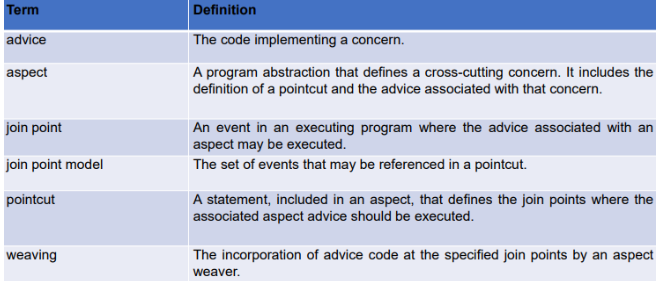

Java Memory Management
JVM (Java Virtual Machine):
- ClassLoader:
- Loading: Generate binary data from .class bytecode and save in the method area.
- Linking: Correctness verification and allocate memory for static variables.
- Initialization: Assign values to static variables.
- Execution engine: Executes bytecode.
- Interpreter: Interprets bytecode line by line and executes. Disadvantage: Interpretation every time a method is called.
- Just-In-Time Compiler: Compiles the entire bytecode, no re-interpretation of repeated method calls.
- Garbage collector: Destroys unreferenced objects.
- Java Native Interface: Provides the native libraries.
Memory:
- Method area: Class-level information (name, parent class name, methods and variables info, static variables). Only one and shared.
- Heap area: Information of all objects. Only one and shared resource.
- Stack area: Stores one run-time stack for every thread. Every frame of the stack stores method calls, destroyed and not shared.
- PC Registers: Store address of current instruction of a thread.
- Native method stacks: Store native method info for every thread.
Run-Time Memory Areas:
- Static area: Fixed size and content.
- Run-time stack: Variable size and content, function call and return.
- Heap: Fixed size, variable content, dynamically allocated objects and data structures. Each memory word in the heap has 3 states: unused, undefined, or value. Function new(k) allocates a block of heap space and returns the address of the next block of k unused words available.
Common Issues:
- Stack overflow: When the top of a stack exceeds its fixed limit.
- Heap overflow: When the heap does not have enough blocks available to satisfy a call to new.
Java Types in Memory
Primitive: Unique dimension
Class types:
- Objects are stored in the heap.
- Instance variables (or fields or attributes) - Stored within objects in the heap.
- Local Variables (in methods) - Stored in the Stack, destroyed at the end of the block.
- Static Variables - Only one copy is stored in static memory.
Array: An array is an object stored in the heap. Declaration allocates memory space for a reference, default is null.
Creation: int[] a = new
int[10]; int[] primes =
{2,3,5,7,11,13};
Access: for (int i=0; i <
a.length;
i++) a[i] = i;
Multidimensional: String[][] table
=
new String[2][3]; table[0][2] = new
String(“Mary”);
String: "ciao" <> new
String("ciao")
Garbage Collection
Garbage Collection is the process of removing unused objects from the heap space. It involves two main steps:
- Mark: Identifies which pieces of memory are in use and which aren't.
- Sweep: Removes objects identified during the “mark” phase.
Garbage can occur when:
- An allocated block of heap memory has no reference to it (an “orphan”) (memory leak)
- A reference exists to a block of memory that is no longer allocated (a “widow”) (dangling reference).
System.gc() can be used to force garbage
collection.
There are different algorithms for garbage collection:
- Reference counting: Gives each object a counter of references. When it becomes 0, it is considered garbage. However, not all garbage is collected, especially in circular chains.
- Mark and Sweep: Sets a Mark Bit to 1 for reachable objects and clears objects with the Mark Bit set to 0.
- Copy Collection: Faster than mark-sweep as it requires only one pass, but it reduces the size of the heap space.
Garbage Collection implementations include:
- Serial Garbage Collector: Freezes all application threads when it runs.
- Parallel Garbage Collector: Default option, uses multiple threads for managing heap space.
- CMS Garbage Collector: Concurrent Mark Sweep (deprecated).
- G1 Garbage Collector: Designed for multiprocessor machines with large memory space.
- Z Garbage Collector: Performs all expensive work concurrently, without stopping the execution of application threads.
Threads
Concurrency: Many processes share one CPU.
Parallelism: Processes are allocated to parallel CPUs.
Threads (aka lightweight process or execution context) are subprocesses within a single program/process run in a shared memory space. Processes run in private separate memory spaces.
Multithreading:
Cooperative threads: Run without interruption (problem of Starvation and non-responsiveness).
Preemptive threads: Can be switched.
JVM Threads:
JVM operates like a mini-OS and schedules its own threads
regardless of the underlying OS. The
start()
method can be called on a Thread object only once
(otherwise
RuntimeException).
Deadlock Problem: Progress of a system is halted as each process is waiting to acquire a resource held by some other process (circular wait).
Java Thread States:
- Running: When thread scheduler selects it.
- Runnable: Queued & eligible to run,
after the
start()method. - Blocked: NOT eligible to run or waiting for a resource.
- Sleeping: During
Thread.sleep(ms)time. - Waiting: For thread interaction (comes back Runnable when another thread sends notification).
join() method lets one thread "join onto the
end” of another thread (t.join(5000);).
Current
thread moves to Waiting state and becomes Runnable when
thread t is dead.
Thread Priorities:
A priority number (1-10) is assigned to each thread.
JVM Scheduling Policy:
- Non-preemptive: Current thread is executed until the end.
- Preemptive time-slicing: Thread is executed until its time-slice is over.
High priority threads:
- Are executed more often, or have longer time-slice.
- Stop execution of lower-priority threads before their time-slice is over.
t.setPriority(8);
t.yield() makes the currently running thread
go
back to Runnable state and allows other threads of the
same
priority (but also the thread t) to
run.
t.sleep() and t.yield() affect
the
thread in execution (they are static methods).
Thread Synchronization
Race Condition: Occurs when many threads can access the same resource simultaneously, potentially leading to corrupted data.
The synchronized modifier locks a code
block,
allowing only one thread to access it at a time. It
ensures
thread safety.
A sleeping thread doesn't release locks it holds, which can lead to deadlocks.
void wait() Causes the current thread to
wait
until another thread invokes the notify()
or
notifyAll() method for the same object.
In a signaled object lock, the thread keeps executing, while in a non-signaled object lock, the thread is suspended.
void notify() Wakes up a single thread that
is
waiting on the lock of the current object.
void notifyAll() Wakes up all threads that
are
waiting on the lock of the current object.
Livelock: Occurs when threads are actively running, but no progress is made due to continuous response to each other's actions.
Thread Starvation: Happens when some threads make progress while others aren't executing, often due to resource contention or priority inversion.
Fork/Join Concurrency: Involves splitting tasks into smaller subtasks and executing them concurrently. Data is shared before forking and after joining.
Sockets
Java Sockets provide an interface through which processes can send and receive information.
A socket is defined by an IP address and a port number.
A connection is identified by the source and destination socket pair.
There are different types of sockets:
- STREAM: Uses TCP for reliable communication.
- DATAGRAM: Uses UDP for unreliable communication.
- RAW: Allows direct data transfer over the IP protocol.
The DataInputStream class is used to create
an
input stream to receive responses, while
DataOutputStream is used to send
information.
For server-side communication, multiple threads are required to allow communication with clients and listening for new connections to occur simultaneously.
The accept() method listens (blocks) for a
connection and then creates and returns a new Socket for
communication. The close() method is used
to
close the ServerSocket.
A servant thread is responsible for managing each client connection socket, avoiding blocking the server with only one client. On the client side, a receiver thread listens to incoming messages without blocking the main application.
Java GUI
The Java GUI (Graphical User Interface) follows the Model-View-Controller (MVC) architecture:
- Model: Application logic separated from the user interface.
- View: Places graphical elements (visual aspect).
- Controller: Associates behavior to elements events.
Important Java GUI components and their usage:
- JFrame:
- Base class for creating a window.
- By default, closing the window doesn't
terminate
the application. Use
setDefaultCloseOperation(JFrame.EXIT_ON_CLOSE);to terminate the application on close.
- JButton(String text): A button component that can hold text.
- JLabel(String text, int alignment): A label with text and alignment options (SwingConstants.LEFT, RIGHT, CENTER).
- JTextField(String text, int size): A single-line text field.
- JTextArea(String text, int rows, int
columns): A multi-line text area. Use
setLineWrap(boolean)andsetWrapStyleWord(boolean)for wrapping. - JScrollPane(Component component): Adds scroll bars to a component.
- JList(Object[] data): Displays a list of items.
- JCheckBox(String text, boolean selected): A checkbox component.
- JRadioButton(String text, boolean selected): A radio button component.
- ButtonGroup: Ensures mutual exclusion for a group of radio buttons or checkboxes.
- JOptionPane: Provides standard
dialog
boxes:
JOptionPane.showMessageDialog(frame, "Message");to show a message dialog.JOptionPane.showOptionDialogfor choices.JOptionPane.showInputDialogto prompt for user input.
Layout Managers:
- FlowLayout: Arranges components from left to right.
- GridLayout(int rows, int cols): Arranges components in a grid.
- BorderLayout: Divides the container into five regions: NORTH, SOUTH, EAST, WEST, and CENTER.
- GridBagLayout: A flexible layout manager that aligns components vertically and horizontally, using a GridBagConstraints object.
Event Handling:
- Common events: MouseEvent, KeyEvent, ActionEvent, AdjustmentEvent (scroll bars), FocusEvent, ItemEvent, MouseMotionEvent, WindowEvent.
- Example:
aButton.addActionListener(e -> doClick(), this);
Listener Interfaces:
- ActionListener: Override
actionPerformedmethod. - FocusListener: Methods:
focusGained,focusLost. - ItemListener: Method:
itemStateChanged. - MouseListener: Methods:
mouseClicked,mouseEntered,mouseExited,mousePressed,mouseReleased. - MouseMotionListener: Methods:
mouseDragged,mouseMoved. - KeyListener: Methods:
keyPressed,keyReleased,keyTyped. - WindowListener: Handles window events.
Direct Drawing:
- Requires a callback method:
void paint(Graphics g)provides methods to draw. - Use
repaint()to invokepaint()and update the view when something changes.
Streams
TODO
Reflection
Java Reflection is the process by which a program can modify its behavior at runtime. A program is reflective if it can analyze and modify its own parameters dynamically.
java.lang.Class: This class provides methods
to
get the class of an object.
// Get the class of an existing object
Class<?> c = scan.getClass();
// When only the type is known
(AnyType).class;
// Get the class by name
Class<?> c1 = Class.forName("java.util.Scanner");
java.lang.reflect.Constructor: Represents a
constructor for a class object.
java.lang.reflect.Method: Represents a
method in
a class.
java.lang.reflect.Field: Represents a field
within a class.
java.lang.reflect.AccessibleObject: This
class
is used to modify accessibility at runtime.
java.lang.reflect.Modifier: Provides methods
to
extract facts about modifiers. For example,
isPrivate(int i) checks if the modifier is
private.
Function Pointers: In Java, function pointers are emulated by passing method objects and invoking them.
ClassLoader: This class is responsible for
loading classes. Every class has a reference to the
ClassLoader that created it (except primitives).
Bootstrap Class Loader: This is the original ClassLoader that has no parent class loader.
Verification and Validation
Verification and Validation (V&V) are essential processes in software engineering to ensure the correctness and quality of software products.
Differences
| Aspect | Verification | Validation |
|---|---|---|
| Question | "Are we building the product right?" | "Are we building the right product?" |
| Objective | Evaluating whether the software is built correctly according to specifications. | Evaluating whether the right product is built to meet user needs and expectations. |
| Focus | Process-oriented (internal quality) | Product-oriented (external quality) |
| Timing | Performed throughout the development lifecycle. | Performed at the end of the development lifecycle. |
| Method | Static analysis techniques, reviews, and inspections. | Dynamic testing techniques, including various types of testing. |
Techniques:
Terminology:
- Fault: A feature that may lead to an error due to a defect or incorrect requirement.
- Error: The runtime effect of executing a fault, which may result in a failure.
- Failure: The manifestation of an error external to the program.
The longer the delay in detecting and removing defects, the higher the cost incurred.
Goals of V&V:
- Minimize the number of defects inserted during software development.
- Maximize the number of defects discovered and removed during testing.
- Minimize detection delay to promptly address issues.
Static Analysis:
Static analysis involves examining software artifacts without executing them. It helps identify potential issues early in the development process.
- Automatic Code Analysis: This is performed on the source code at compile time, providing insights into code quality and potential vulnerabilities.
- Code Smells: Indications in the code that usually correspond to a problem, such as violations of design principles.
- Technical Debt: Refers to the implied cost of additional rework caused by choosing an expedient solution rather than the best one, leading to the need for code rewriting.
Testing
Testing is conducted to find defects and detect differences between actual and expected behavior.
Why Testing?
Testing is essential to:
- Improve software design.
- Make software easier to understand.
- Reduce debugging time.
- Catch integration errors to produce better code.
What to Test?
Testing covers various aspects including:
- Boundary conditions.
- Success and failure scenarios.
- General functionality.
Test Case
A test case is represented as:
T1: (input1, input2, ...; expected output) // Name
Test Suite
A test suite is a collection of test cases:
TS1: {T1, T2}
Oracle
An oracle is used to know the expected behavior for a given test case.
Unit Test
Unit testing can be performed in two ways:
- Black Box: No knowledge of internal structure, focusing on functional testing, involving random testing, equivalence class partitioning, and boundary conditions.
- White Box: Structural testing, examining the internal structure, and covering structural elements such as statements, decisions, conditions, paths, and loops.
Integration Testing
Integration testing involves adding one unit at a time to test the system.
Regression Test
Regression testing involves testing the old code to verify it works after changes.
Black Box Testing Overview
Black Box Tests focus on software simplicity, making assumptions about implementation and testing component interactions. They target interfaces and behavior.
Selection Criteria:
- Equivalence class-based
- Boundary condition-based
Termination Criteria:
- One test per equivalence class/boundary condition
- More than one test per equivalence class/boundary condition
- Sufficient tests for statistical significance
Functional Test Criteria:
- Each functionality must be executed at least once.
- Test cases use central, border, and special values.
Equivalence Classes:
- Test cases are grouped into equivalence classes.
- Failures in a class indicate failures in others within the same class.
Test Case Selection:
- Every equivalence class must have at least one test case.
- Test for invalid inputs and cover as many valid cases as possible.
Limit Conditions:
- Test cases at boundaries often succeed.
- Include boundaries and values immediately above or below.
Example - Black Box:
abs(x) := (x >= 0 then y = x else y =
-x)
- Equivalence classes: positive and negative
x - Boundary condition:
xclose to zero.
JUnit: Java Unit Testing Framework
JUnit is a framework designed to assist programmers in defining and executing tests, formalizing requirements, writing/debugging code, and integrating code seamlessly.
For each test, JUnit follows these steps:
- Pre-test fixtures: Acquire resources and create objects.
- Test method: Check the output of the element under test using assert() methods.
- Post-test fixtures: Release resources and remove objects.
Assert methods provided by JUnit include:
- assertTrue(boolean test)
- assertFalse(boolean test)
- assertEquals(expected, actual)
- assertSame(Object expected, Object actual)
- assertNotSame(Object expected, Object actual)
- assertNull(Object object)
- assertNotNull(Object object)
- fail()
JUnit 4 introduced the use of Java annotations and enhanced assert() methods. It executes all methods annotated with "@Test", public, returning void, and with no arguments.
Annotations such as @Before and @After are used to designate pre-test and post-test fixtures respectively, to acquire and release resources.
Test suites in JUnit require annotations like @RunWith(Suite.class) and @Suite.SuiteClasses({ ... }) to execute multiple test classes.
Test Coverage and Effectiveness Metrics
Statement Coverage: Measures the percentage of statements covered by tests compared to the total number of statements.
Test Effectiveness Ratio: Evaluates the quality of a test case by calculating the ratio of activated elements to the total elements in the test item.
Node Coverage: Ensures that every node in the control flow graph is visited by tests.
Edge (Branch) Coverage: Guarantees that every edge in the control flow graph is traversed by tests.
Condition Coverage: Requires both true and false cases of each boolean condition to be activated by tests.
Multiple Condition Coverage: Demands activation of all possible combinations of conditions.
Path Coverage: Ensures that every path in the control flow graph is executed by tests.
Loop Coverage: Requires three test cases: Not entering the loop, One iteration, More than one iteration.
Integration and System Testing
Integration and System Testing are applied to an aggregation of two or more units/modules to find faults concerning the interoperation of units and the aggregate whole functions.
- Driver: A unit program or module that invokes the component or module being tested. The driver acts as a substitute for the missing components.
- Stub: A simplified implementation of a unit developed to substitute a not yet available unit.
Testing Strategies
- Top-down testing: Allows early detection of architectural flaws and requires the definition of stubs for lower-level units.
- Bottom-up testing: Testing can start early, lower levels are directly observable, and it requires the definition of drivers for lower-level units.
Testing Process
- Production testing: Test products as they are made.
- Regression testing: Repeat tests after any change.
- Acceptance testing: Data and test cases provided by the customer.
- Beta-testing: Conducted with a selected group of potential customers.
Planning and Specification Documents
- TP (Test Plan): Establish a plan and schedule, define required resources, define pass/fail criteria, and explain each test.
- TDS (Test Design Specification): Outlines techniques, analysis of results, motivation, and generic attributes.
- TCS (Test Case Specification): Specifies a test case in terms of input data, expected output, and test conditions (required hardware and software).
- TPS (Test Procedure Specification): Details how to execute test cases.
Execution Deliverables
- Test item report
- Test log
- Incident report
- Summary report
Test-Driven Development (TDD)
In TDD, test cases are written before the implementation code.
Benefits of TDD
- Code coverage
- Regression testing
- Simplified debugging
- System documentation
JUnit 5
JUnit 5 introduces several new features and improvements over previous versions. Key highlights include:
- @BeforeEach/@AfterEach, @BeforeAll/@AfterAll
- Test methods are not required to be public
- Java 8 support (lambda expressions, extensions, parameterized tests, etc.)
Suites:
- @RunWith(JUnitPlatform.class)
- @SelectClasses({ … })
- @SelectPackages({ … })
Assertion Styles:
Hamcrest Matchers: Use
assertThat(value, matcher)
- Matchers:
equalTo(),instanceOf(),notNullValue(),nullValue(),sameInstance()- Numbers:
closeTo(),greaterThan(),greaterThanOrEqualTo(),lessThan(),lessThanOrEqualTo() - Logical:
allOf(),anyOf(),not() - String:
equalToIgnoringCase(),equalToIgnoringWhiteSpace(),containsString(),endsWith(),startsWith() - Collections:
array(),hasItemInArray(),hasItem(),hasItems(),hasEntry(),hasKey(),hasValue()(forMap)
AssertJ Fluent Assertions: Provides a
single
assertThat(actual) method, which returns an
Assert object. The method as() can be used
to
define a message.
Example:
assertThat(res).as("Checking return value").isNotNull().isEqualTo(expected);
- Object Assertions:
isEqualTo(),isInstanceOf(),isNotNull(),isNull(),isSameAs(),returns(),hasFieldOrPropertyWithValue(),extracting()- Number Assertions:
isCloseTo(),isGreaterThan(),isGreaterThanOrEqualTo(),isLessThan(),isLessThanOrEqualTo(),isBetween()- String Assertions:
startsWith(),endsWith(),contains(),doesNotContain(),isEqualToIgnoringCase()- Container Assertions:
hasSize(),hasSizeLessThan(),hasSizeGreaterThan(),isSorted(),contains(),containsExactly(),extracting(),filteredOn()- Map Assertions:
containsKeys(),containsEntry(),contains(),entry(),extractingFromEntries()- Exception Assertions:
assertThatThrownBy(),hasMessage()
Software Testing – Advanced Topics
Dynamic Analysis
Property-Based Testing: Derive automatic test cases using Jqwik for Java. Jqwik is able to generate objects of most Java types.
@Propertydefines the method running the PBT@ForAllgenerates random values for the enclosed variable
Example: Arbitraries.integers().between(1,
300).filter(anInt -> anInt % 6 == 0)
Patterns for finding properties include:
- Business rule as property
- Inverse, Idempotent, Invariant functions, Commutativity
- Test oracle
- Hard to compute, but easy to verify
- Induction
- Stateful testing
- Fuzzing
Mutation Testing: A mutant is a copy of the original program with a small artificial change. Its behaviors and outputs differ from those of the original. If your tests fail, the mutation is killed; if your tests pass, the mutation survived. PITest runs your unit tests against automatically modified versions of your code.
Static Analysis
Compilation analysis: Compilers check for syntax, types, and semantic correctness.
Data Flow Analysis: Analyzes the values of variables during execution. Three operations on variables: definition, use, nullification.
Symbolic Execution:
- Static: The program is executed with symbolic values instead of actual values. Determine all the path conditions (path constraints) by propagating symbolic input values along the path.
- Dynamic: A random test case collects symbolic constraints along the executed path, negates the branch condition in the path, and generates a new test input for the negated constraint.
Inspections: Reading documents/code to find defects.
Performance Testing:
Non-functional testing, where the performance of the application is evaluated under expected or higher load.
- Throughput: Number of requests processed in a specified time duration.
- Response Time: Time taken to complete each transaction.
- Memory/network, CPU usage
Tuning: Product performance is enhanced by setting different values to the parameters without touching source code.
Benchmarking: Comparison across competitive products.
Load Testing: Increasing the load on the system.
Stress Testing: Overwhelming resources or removing resources to ensure the system fails and recovers.
Spike Testing: Increasing the load abruptly, then measuring performance at the peak and at zero load.
Endurance Testing: Testing performance under certain load conditions over an extended period.
Volume Testing: Testing with huge amounts of data and analyzing response time.
Scalability Testing: Testing the ability of software to scale up with increasing workload and data traffic.
- Upward Scalability Testing: Expanding the number of users until a crash point.
- Downward Scalability Testing: When load testing fails, decreasing the number of users.
Apache JMeter: Load testing functional behavior and measuring performance.
Agile Methodologies
Waterfall Method
The Waterfall methodology is plan-driven and is suitable for large projects with well-understood and stable requirements. It involves limited changes and is less responsive to changing needs.
Incremental Development
Incremental development involves developing the software in stages: initial, intermediate, and final versions. This approach reduces the cost of changes, allows customer interaction, and supports rapid delivery. However, it has some disadvantages:
- Not a visible process
- Structure tends to degrade over time
- Frequent refactoring is needed
Incremental Delivery
Incremental delivery involves deploying increments for end-users, allowing for a more realistic evaluation of the software. However, it can be difficult to apply in replacement systems.
Integration and Configuration
This approach emphasizes software reuse and integration from existing components.
Agile Methods
Agile methodologies focus on the rapid delivery of software, minimizing documentation, and emphasizing the code to avoid software failure and reduce overheads. Key principles of Agile methods include:
- Customer involvement
- Incremental delivery
- People over processes
- Embrace changes
- Maintain simplicity
Extreme Programming (XP)
Extreme Programming (XP) is an Agile method that emphasizes the rapid development and delivery of software. Key practices of XP include:
- Releasing new versions several times a day
- Delivering increments every two weeks
- Running tests for every build
- Constant code refactoring
- Using user stories for requirements
- Pair programming (two developers working together on the same code)
SCRUM
SCRUM is an agile method that focuses on managing iterative development. It consists of three phases:
- Outline planning: Involves defining objectives and software architecture.
- Series of sprint cycles.
- Closure phase: Wraps up the project, including documentation.
Benefits of SCRUM include breaking the product down into understandable chunks and allowing the customer to see one-time delivery of increments.
The Product Owner controls the Product Backlog.
Roles:
- Product Owner: Controls the priority of the team's backlog, working closely with stakeholders.
- Scrum Master: Their goal is to produce a self-organizing team.
- Team member: Each member is self-organizing.
The Product Backlog is responsible for the ordering of stories (description of desired functionality) and any changes. It is the property of the Product Owner.
The Sprint Backlog consists of committed stories and additional tasks. It is the property of the team.
DevOps
DevOps provides automation to enable efficient collection and organization of data and communication of the data to appropriate actors without human intervention. Key aspects of DevOps include:
- Alignment of development and operations teams towards the same goal.
- Focus on faster collaboration, often seeking automation wherever possible.
- Utilization of automation to handle deployment processes.
- Integration of reusable tools and components to streamline workflows.
- Encouragement of collaboration across disciplines within the organization.
- Development and testing against a production-like system environment.
- Adoption of iterative and frequent deployments using repeatable and reliable processes.
- Continuous validation of operational quality characteristics.
- Emphasis on increasing feedback loops to improve efficiency and effectiveness.
Continuous Deployment
Continuous Deployment involves building pipelines that streamline the entire engineering organization, from development to QA to operations. Key features of continuous deployment include:
- Implementation of pipelines to automate and optimize the flow of code from development through testing to production deployment.
- Integration of automated testing and quality assurance processes into the deployment pipeline.
- Emphasis on fast and reliable deployments, often with minimal human intervention.
- Continuous monitoring and feedback loops to identify and address issues promptly.
- Focus on scalability and resilience to ensure the stability of deployed systems.
Aspect Oriented Programming
Aspect Oriented Programming (AOP) provides the key advantage of separation of concerns, where each program element does only one thing.
- Scattered code: Related code is not local; the implementation of a concern is scattered across several components.
- Tangled code: A module includes code that implements different requirements, making it difficult to understand and change.
- Redundant code: The same fragment of code appears in many places.
Concerns:
- Core concerns: Functional concerns related to the primary purpose of a system.
- Secondary concerns: Functional concerns that reflect non-functional and QoS (Quality of Service) requirements.
Stakeholder concerns:
- Related to specific functionality
- QoS
- Policy concerns
- System concerns: maintainability and configurability
- Organisational concerns: budget, assets, repudiation
Cross-cutting concerns: These are concerns whose implementation cuts across multiple components, leading to tangling and scattering. Examples include:
- Logging
- Debugging
- Profiling (Performance)
- Security & Authentication
- Exception Handling
- Event Handling
- Synchronization
- Session tracking and expiration
- Database connection & Persistence
By representing cross-cutting concerns as aspects, individual concerns can be understood, reused, and modified without changing other parts of the program.
Obliviousness: Implicit invocation of an aspect.
Benefits of AOP:
- Better modularity: Localizes cross-cutting concerns in an aspect.
- Easier understanding: Less scattered and tangled code.
- Easier modifiability.
Advice declarations:
- Before advice: Runs when the join point is reached, before the method runs.
- Before call / Before execution
- After advice: Runs just after the method.
- After returning: After the method ends normally.
- After throwing: After the method ends by throwing an exception.
- After: Runs after both previous cases.
- Around advice: Runs when the join point is reached and has control over whether the method itself runs at all. It surrounds the join point, can decide if computation will happen, and can modify arguments.
ThisJoinPoint: A feature providing details of the join point, such as the source location, string representation of the current join point, arguments of the method, target object, etc.
Spring AOP
Spring AOP (Aspect-Oriented Programming) is a framework that provides an additional way of modularizing cross-cutting concerns by separating them from the business logic.
- Aspect: An aspect is a module of cross-cutting concerns. It encapsulates behaviors that affect multiple classes or modules in your application.
- Advice: Advice is the action taken by an aspect at a particular join point. Different types of advice include "before," "after," "around," "after-returning," and "after-throwing."
- Join Point: A point during the execution of a program where an aspect can be plugged in. In Spring AOP, join points are method invocations.
- Pointcut: A pointcut is a set of one or more join points where advice should be executed. It defines where an aspect should be applied in your application.
- Introduction: Introduction allows adding new methods or attributes to existing classes. This helps in keeping the core concerns separated from cross-cutting concerns.
- Weaving: Weaving is the process of integrating aspects into the application code. This can be done at compile time, load time, or runtime.
- Proxy-based: Spring AOP uses runtime proxies to apply aspects to the target objects. This means that the AOP functionality is applied at runtime and does not require altering the original class.
- Configuration: Aspects in Spring AOP can be configured either using XML-based configuration or annotation-based configuration.
- AspectJ integration: Spring allows you to use AspectJ annotations and expressions for more advanced AOP configurations.
Prolog
Prolog (PROgramming in LOGic) allows the computer to solve problems using principles of logic. It is a declarative language, consisting of declarations (statements or propositions in symbolic logic).
Key concepts in Prolog include:
- Horn clauses: If (BODY) then HEAD
- Propositions: Logical statements,
e.g.,
likes(john, football) - Logical connectors: Negation, conjunction, disjunction, equivalence, implication
- Quantifiers: For all, exists
Resolution: If the head of horn clause #1 matches one of the terms in horn clause #2, then we can replace that term with the body of clause #1.
Unification: Finding values for variables during resolution so that the matching process can succeed.
Instantiation: Temporary binding of a value (and type) to a variable to allow unification.
Prolog syntax and terminology:
- Constants: Start with lowercase letters
- Variables: Start with uppercase letters
- Query (goal):
?- rainy(seattle) - Knowledge Base: Collection of facts and rules
- Facts: Statements assumed to be
true,
e.g.,
male(steve) - Rules: Predicates that are true
depending on a given condition, e.g.,
parent(X, Y) :- mother(X, Y) - Logical connectors:
AND(comma),OR(semi-colon)
Forward chaining: (bottom-up) starts with each rule and checks the facts. Works more efficiently on a small database.
Backward chaining: (top-down) starts with the facts and uses the rules that apply, using a depth-first resolution process (in sequence). Prolog uses backward chaining.
A Knowledge Base of Horn clauses can be represented with an AND-OR graph.